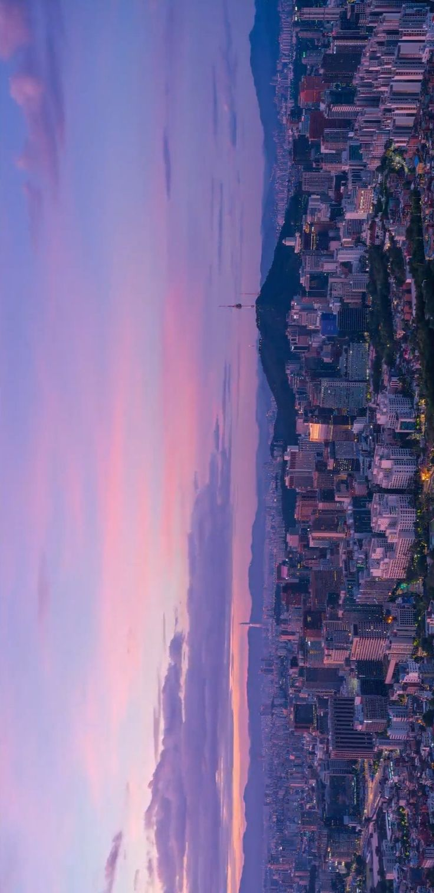
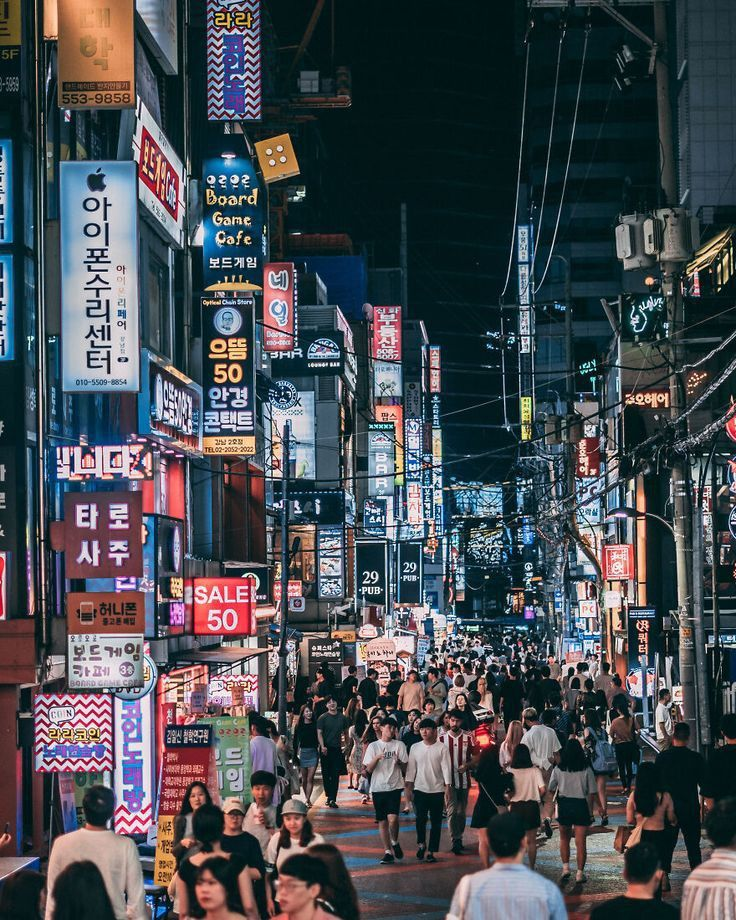
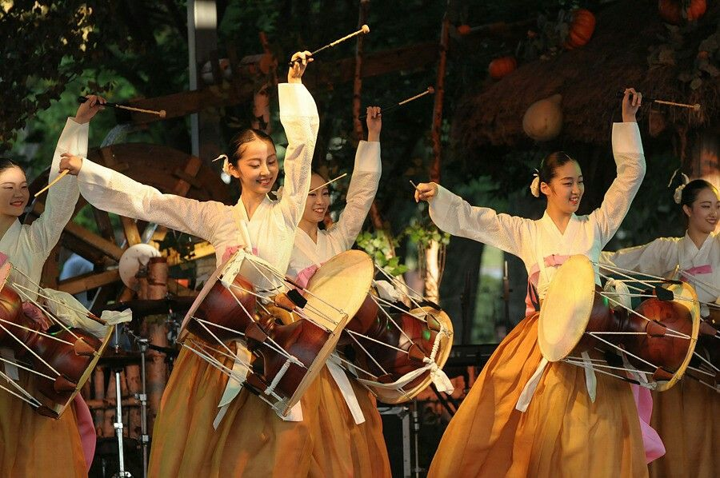
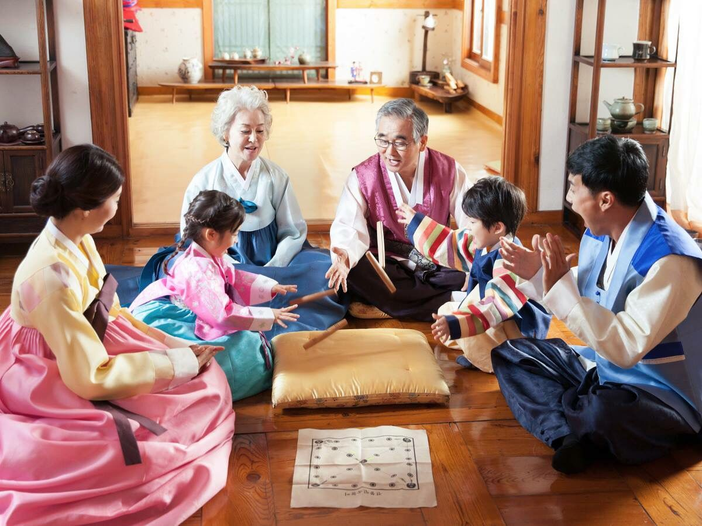

Hello, South Korea!

Welcome aboard! This journal follows my semester-long trip into South Korea, one station at a time. For the first stop, I want to introduce the country itself: where it is, who lives there, what shaped it, and why it's the country I picked.
Geography
South Korea (officially the Republic of Korea, 대한민국) sits on the southern half of the Korean Peninsula in East Asia. To the north, it shares a heavily guarded border with North Korea, the Demilitarized Zone (DMZ). The rest of the country is surrounded by water: the Yellow Sea to the west, the East Sea (Sea of Japan) to the east, and the Korea Strait to the south, across from Japan.
Because so much of the land is mountainous, most people live in the flatter areas and along the coasts, which is part of why the cities are so dense. Click the pins below to explore a few important places.
People
About 51 million people live in South Korea, and roughly half of them live in the Seoul Capital Area. The population is one of the most ethnically uniform in the world, although the number of foreign residents and multicultural families has been growing.
Everyone speaks Korean, which is written in Hangul (한글). King Sejong the Great created the alphabet in the 1400s so that ordinary people could learn to read, instead of relying only on Chinese characters. Koreans still celebrate Hangul Day every October 9th.
Religion is mixed: around half of Koreans say they have no religion, and most of the rest are Christian or Buddhist. Confucian values like respect for elders and loyalty to family still shape everyday life, even for people who aren't religious.

Culture
Korean culture mixes centuries-old tradition with some of the most modern pop culture in the world.
Food: Meals are built around rice, soup, and lots of shared side dishes (반찬, banchan). Kimchi is at almost every meal, and kimjang, the tradition of families making kimchi together for winter, is recognized by UNESCO as Intangible Cultural Heritage. Other favorites include bibimbap, tteokbokki, and Korean BBQ.
Clothing: The traditional outfit is the hanbok (한복), worn now mostly for holidays like Chuseok and Seollal, weddings, and first birthdays.
Language and manners: Korean has different speech levels, so the way you talk changes depending on someone's age and status. Using the polite form with elders and strangers is expected.
The Korean Wave (한류, Hallyu): Since the late 1990s, Korean music, dramas, films, beauty, and food have spread worldwide. This is the part of Korean culture that first reached me.

History
Korea has thousands of years of history, but a few stops on the timeline explain a lot about the country today:
- Three Kingdoms periodGoguryeo, Baekje, and Silla competed for the peninsula until Silla unified most of it in the 600s.
- Goryeo (918–1392)The dynasty that gave "Korea" its English name.
- Joseon (1392–1910)A Confucian dynasty that ruled for over 500 years. Hangul was created during this period.
- Japanese rule (1910–1945)Korea was a colony of Japan until the end of World War II.
- Division (1945–1948)The peninsula was split at the 38th parallel, and separate governments formed in the North and South.
- Korean War (1950–1953)The war ended in an armistice, not a peace treaty, so the two Koreas are technically still at war.
- "Miracle on the Han River"Starting in the 1960s, South Korea grew from one of the poorest countries in the world into a major economy.
- Democracy (1987) and the Seoul Olympics (1988)Mass protests led to democratic elections, and the Olympics introduced a modern Korea to the world.

Society
Today South Korea is a democratic republic led by an elected president, and one of the most technologically advanced countries in the world. It's home to companies like Samsung, Hyundai, and LG, and it has some of the fastest internet anywhere.
Education is extremely competitive. Many students attend private after-school academies (학원, hagwon) to prepare for the Suneung, the national college entrance exam. On exam day, planes are rerouted and office hours are pushed back so students aren't disturbed.
The country also faces real challenges: it has one of the lowest birth rates in the world (under one child per woman), a fast-aging population, long work hours, and high pressure to succeed. These pressures show up a lot in Korean dramas and films, which is part of why they feel so honest to me.
Why South Korea?
I actually heard Korean music before I even knew it was Korean. The Wonder Girls' "Nobody" was a huge hit in the Philippines, and my mom used to play it all the time. Years later, when "Gangnam Style" took over the internet, one of the next videos YouTube recommended to me was BTS. Since around 2016–2017 I've been a fan, and I've been into K-pop ever since.
K-pop led me to K-dramas. My first one was W: Two Worlds, but my favorites are slow romances like Our Beloved Summer. I also love Korean animated films like Your Letter and Lost in Starlight.
After years of watching and listening from far away, I want to understand the country behind the music and stories: the history, the everyday life, and the values that shape them. This semester is my chance to go beyond being a fan.

Sources
- CIA. "Korea, South." The World Factbook. https://www.cia.gov/the-world-factbook/countries/korea-south/
- Britannica. "South Korea." https://www.britannica.com/place/South-Korea
- UNESCO. "Kimjang, making and sharing kimchi in the Republic of Korea." https://ich.unesco.org/en/RL/kimjang-making-and-sharing-kimchi-in-the-republic-of-korea-00881
- Korea.net. "About Korea." https://www.korea.net/AboutKorea